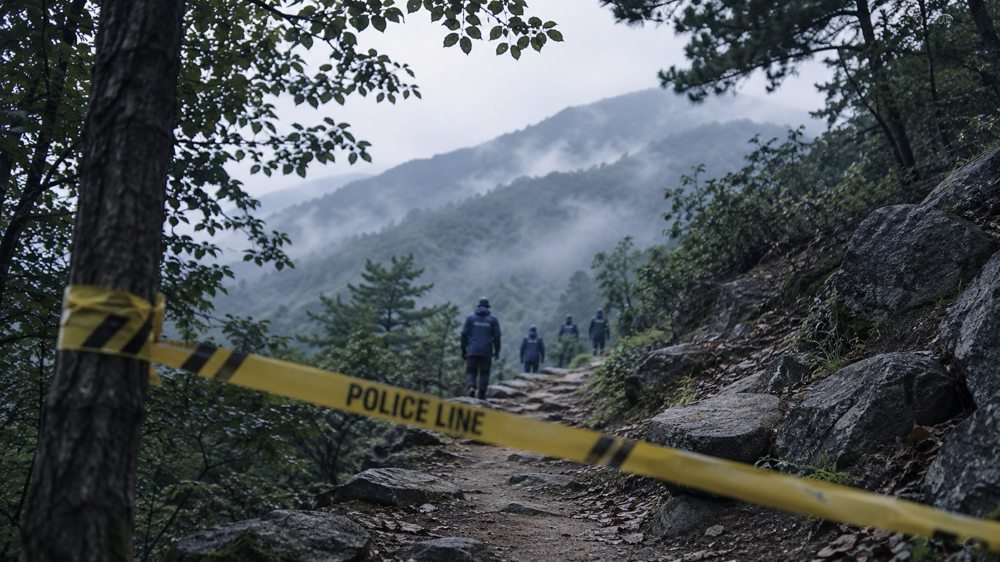

CASE FILE / 03
수사 과정
수사 과정에서 초기 수색과 제보 검증, 유해 감식 및 현장 증거 분석 등 여러 측면의 한계와 비판이 제기되었다. 그러나 수사 과정의 문제점이 모두 명확하게 입증된 것은 아니며, 결정적인 증거를 확보하지 못해 사건은 현재까지 미제로 남아 있다.

수사의 흐름
| 구분 | 주요 내용 |
|---|---|
| 초기 수색 | 개구리소년 실종 사건의 초기 수색은 1991년 3월 26일 대구 달서구 와룡산 일대에서 다섯 어린이가 실종된 뒤 시작되었다. 아이들이 귀가하지 않자 가족들은 주변을 찾아다니며 행방을 수소문했고, 경찰에도 실종 신고가 접수되었다. 경찰과 가족, 주민들은 와룡산과 인근 지역을 중심으로 수색을 진행했으며, 아이들을 목격했다는 제보와 관련 정보를 확인했다. 그러나 뚜렷한 행방을 찾지 못했고, 사건은 전국적인 관심 속에 장기 미제 사건으로 이어졌다. 초기 수사에서는 가출 가능성도 검토했으나, 아이들의 가족들은 단순한 가출이 아니라고 보고 납치 가능성 등을 제기했다. 이후 수색 범위가 확대되었고, 전국적인 전단 배포와 대규모 인력 투입에도 아이들의 행방은 확인되지 않았다. |
| 본격 수사 | 개구리소년 사건의 본격적인 수사는 실종 직후부터 시작되었으며, 장기간 이어진 수색에도 성과가 없자 경찰은 수사 범위를 넓혀 다양한 제보와 가능성을 조사하였다. 1993년 11월에는 경찰청이 수사연구팀을 구성해 사건을 원점부터 재검토하였고, 1995년에는 성장한 아이들의 모습을 추정한 몽타주 전단을 제작해 전국에 배포하였다. 그러나 암매장 장소나 아이들을 목격했다는 여러 제보는 구체적인 증거로 이어지지 않았다. 1996년 5월에는 대구지방경찰청 수사본부가 해체되고 수사 체제가 변경되었다. 이후에도 사건은 해결되지 않았으며, 2002년 9월 26일 와룡산에서 아이들의 유해와 신발 등이 발견되면서 수사는 실종 경위뿐 아니라 사망 원인을 밝히는 방향으로 전환되었다. |
| 유해 발견 이후 | 2002년 9월 26일, 대구 와룡산에서 실종된 아이들로 추정되는 유해 5구와 신발, 옷가지 등이 발견되면서 경찰은 사망 경위를 밝히기 위한 수사에 착수하였다. 초기에는 저체온증이나 사고사 가능성도 제기되었으나, 유해에 대한 정밀 감식 결과를 바탕으로 타살 가능성에 무게를 두고 수사가 진행되었다. 경찰은 국립과학수사연구소와 법의학 전문가들의 감식 결과를 검토하고, 현장 주변에서 발견된 탄두와 탄피, 유품 등을 분석하였다. 또한 사건 관련 제보를 확인하고, 현장 인근의 움막과 실종 당일 목격 정보 등 여러 가능성을 조사하였다. 그러나 범인을 특정할 결정적인 증거를 확보하지 못했으며, 정확한 범행 경위와 범행 도구도 밝혀내지 못하였다. 결국 2006년 3월 25일 살인죄 공소시효가 만료되면서 사건은 미제로 남게 되었다. |
| 현재 수사 상황 | 개구리소년 사건은 현재까지 범인과 정확한 사망 경위가 밝혀지지 않은 장기 미제사건이다. 2019년 경찰은 사건을 원점에서 재검토하는 재수사에 착수했으며, 기존 수사 기록과 현장 증거물, 관련 제보 등을 다시 살펴보았다. 2020년 보도에 따르면 수사 기록 약 360권을 분석하고 유해와 유류품을 재감정했으나, 당시까지 결정적인 단서는 확인되지 않았다. 2026년 3월 사건 35주기 보도에 따르면, 대구경찰청은 유해와 토양 등 증거물을 새로운 과학수사 기법으로 재분석하는 방안을 국립과학수사연구원과 협의하고 있으며, 추가 제보도 확인하고 있다. AI 기법을 활용한 분석 가능성도 검토하겠다는 입장을 밝혔다. 다만 현재까지 범인을 특정하거나 사건의 전모를 밝혀낸 결과는 공개되지 않았다. 따라서 수사는 이어지고 있지만, 결정적인 증거가 확보되지 않아 사건은 여전히 미제로 남아 있는 상황이다. |
수사 과정에서 지적된 실수와 한계
| 구분 | 주요 내용 |
|---|---|
| 초기 수사 방향 | 실종 초기에는 길을 잃거나 사고를 당했을 가능성 등 여러 가설이 제기되었다. 유족들은 수사 방향에 비판을 제기했지만, 초기 수사 판단 전체가 잘못되었다고 단정하기는 어렵다. |
| 장기간 미발견 | 대규모 수색에도 아이들을 찾지 못했고, 유해는 실종 약 11년 6개월 후인 2002년에 발견되었다. 이는 초기 수색과 수사에서 해결하지 못한 중요한 한계로 남았다. |
| 목격자 진술 | 시간이 흐르면서 목격자의 기억이 희미해지고 진술을 검증하기 어려워졌다. 제보를 객관적인 증거와 대조하는 과정에도 한계가 있었다. |
| 유해 감식 | 유해 발견 이후 감식이 진행되었지만, 정확한 사망 경위와 구체적인 범행 과정을 명확하게 밝혀내지 못했다. |
| 현장 증거 분석 | 유해 주변의 유류품과 옷가지 등 여러 증거를 분석했으나, 범인을 특정할 결정적인 단서는 확보되지 않았다. |
| 사고 가능성 검증 | 사고 가능성을 포함한 여러 가설이 검토되었지만, 사건의 경위를 확정할 만한 증거는 확보되지 않았다. |
| 다양한 가설 | 현장 주변의 구조물과 각종 제보 등 여러 가능성이 조사되었지만, 사건과 직접 관련이 있는지 입증되지 않은 내용도 있었다. |
| 시간의 경과 | 장기간 수사가 이어지면서 현장 상태가 변하고 관련자의 기억이 희미해져, 새로운 증거를 확보하고 당시 상황을 재구성하는 일이 어려워졌다. |
| 수사 결과에 대한 의문 | 유해 발견 이후에도 사망 원인과 사건의 전모가 명확하게 밝혀지지 않아, 수사 결과를 둘러싼 의문과 비판이 이어졌다. |
| 유족과의 소통 | 유족들은 수사 과정과 결과에 의문을 제기했다. 수사 판단의 근거와 진행 상황에 대한 설명이 충분했는지도 비판적으로 살펴볼 부분이다. |
| 결정적 증거의 부재 | 여러 차례 수색과 수사가 이루어졌지만 범인을 특정할 결정적인 증거를 확보하지 못했고, 사건은 현재까지 미제로 남아 있다. |
※ 위 내용은 수사 과정에서 드러난 한계와 제기된 비판을 정리한 것이다. 개별 항목을 확정된 수사 과실로 단정해서는 안 되며, 세부 내용은 당시 언론 보도와 공식 발표를 대조해 확인해야 한다.